The local vision model received the source image and wrote a detailed gzip-wrapped llmPEG 1.1 artifact, including pixel-measured tone, with temperature 0, seed 42, and /no_think.
Cases marked pass5/14
Mean visual proxy0.667
Mean layout0.675
Mean palette distance0.055
Mean dHash0.509
The local GPU workflow received only rendered text and generated a 512×512 image with seed 42, 30 steps, CFG 3.5, Euler sampling, and the simple scheduler.
Model boundary: the image generator received the rendered text prompt only. It never received the source image or source pixels.
Structural proxy band: moderate. 5/14 cases are marked pass in their checked-in results; mean dHash is 0.509. These structural metrics do not prove identity preservation, so inspect and rate each pair below. With n=14, this is a product probe—not a population estimate.
Current pipeline → tone correction: mean visual proxy 0.627 → 0.667 (+0.039). Use the three-way comparisons below to judge identity directly.
CASE tone-cat-monochrome-loop
PASS
Monochrome cat portrait · closed loop


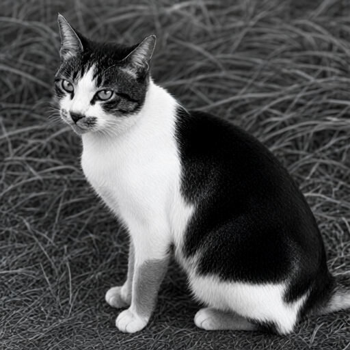
Visual proxy0.660
Layout0.665
dHash0.438
Palette distance0.059
Visual proxy change: 0.632 → 0.660 (+0.029)
Measured outcome: A second render at the same seed with negatives chosen from the first render's measured error: color, colour, tint, sepia, dark, underexposed, dim. Source luminance 125, saturation 0; current luminance 67, saturation 11; closed loop luminance 79, saturation 10 (0–255). The three cats also informed the earlier hand-picked negatives; the loop's terms are a fixed rule.
136.7:1 plain artifact ratio · 345,840 → 2,529 bytes · written by llmpeg/0.5.1 · 251.7:1 gzip stored ratio · 1,374 bytes on disk
Prompt and machine-readable result
Create a new image from this semantic description. Primary request: Black and white medium shot, eye-level perspective looking down at a seated domestic shorthair cat positioned centrally within the frame. The subject is facing slightly left with its head turned to look back toward the camera lens. Visible features include pointed ears set high on the skull, dark tabby markings over the top of the head contrasting with a white blaze running between the eyes and up the nose bridge. Dark fur covers the cheeks while the muzzle area transitions from grey to white around the mouth. The chest is predominantly white extending down into front paws which are planted forward in an upright sitting posture. A large dark patch extends across the back flank toward the rear legs where lighter tones appear near the hindquarters and tail base. Background consists of out-of-focus vegetation with linear textures suggesting grass blades scattered throughout. Fidelity goal: Maximize resemblance to this specifically described subject. Prioritize distinctive markings, proportions, pose landmarks, crop, and object geometry over generic beauty or creative interpretation. Style/medium: medium focal length lens with shallow depth of field creating soft background blur; natural daylight illumination from above casting subtle shadows beneath paws and along body contours. Canvas: 1491x1510 (0.987:1) Composition: - 0% - 100%, 5% - 98%: Full frame occupied by seated cat; head occupies upper left quadrant, body extends diagonally toward lower right corner. - 23% - 47%, 6% - 18%: Cat's face showing dark tabby forehead markings above white muzzle area with visible whiskers extending outward from snout region. - 50% - 98%, 23% - 97%: Lower body and legs; front paws positioned forward showing lighter fur tones against darker flank coverage, hindquarters partially obscured by angle of view. Palette: #000000, #808080, #FFFFFF Tone: mid-tone exposure (mean luminance 125/255), moderate contrast (spread 61/255), strictly black-and-white grayscale with no colour or tint at all (mean saturation 0/255). Match this grading exactly: do not brighten, add contrast, boost saturation, or apply HDR, glow, or cinematic colour grading. Text to render verbatim when possible: - none Constraints: preserve every described landmark, hierarchy, and spatial relationship; add no unlisted subject, object, marking, or decoration. This is a semantic reconstruction, not the original. Avoid: inferring breed beyond domestic shorthair classification based on visible fur texture, speculating emotional state or intent behind gaze direction; extra logos; watermarks; invented claims.
Your assessment
Source: Barmanru · Public domain dedication · reconstruction generated from text only
{kind=link}
{kind=link}
CASE tone-cat-monochrome-matched
PASS
Monochrome cat portrait · regraded
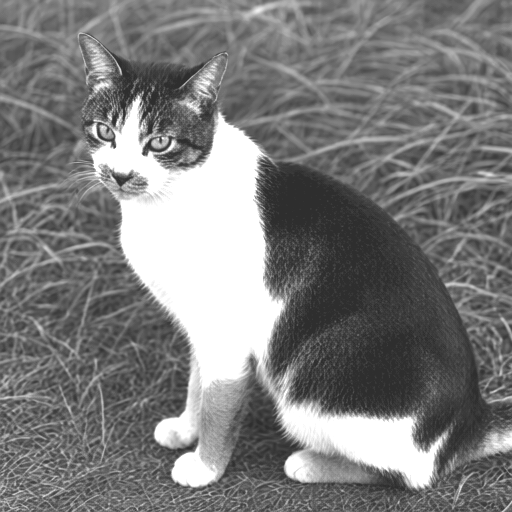
Visual proxy0.674
Layout0.674
dHash0.453
Palette distance0.078
Visual proxy change: 0.632 → 0.674 (+0.043)
Measured outcome: The current render regraded toward the artifact's recorded tone as a post-process; it reads the artifact, never the source. Source luminance 125, saturation 0; current luminance 67, saturation 11; regraded luminance 124, saturation 0 (0–255).
136.7:1 plain artifact ratio · 345,840 → 2,529 bytes · written by llmpeg/0.5.1 · 251.7:1 gzip stored ratio · 1,374 bytes on disk
Prompt and machine-readable result
Create a new image from this semantic description. Primary request: Black and white medium shot, eye-level perspective looking down at a seated domestic shorthair cat positioned centrally within the frame. The subject is facing slightly left with its head turned to look back toward the camera lens. Visible features include pointed ears set high on the skull, dark tabby markings over the top of the head contrasting with a white blaze running between the eyes and up the nose bridge. Dark fur covers the cheeks while the muzzle area transitions from grey to white around the mouth. The chest is predominantly white extending down into front paws which are planted forward in an upright sitting posture. A large dark patch extends across the back flank toward the rear legs where lighter tones appear near the hindquarters and tail base. Background consists of out-of-focus vegetation with linear textures suggesting grass blades scattered throughout. Fidelity goal: Maximize resemblance to this specifically described subject. Prioritize distinctive markings, proportions, pose landmarks, crop, and object geometry over generic beauty or creative interpretation. Style/medium: medium focal length lens with shallow depth of field creating soft background blur; natural daylight illumination from above casting subtle shadows beneath paws and along body contours. Canvas: 1491x1510 (0.987:1) Composition: - 0% - 100%, 5% - 98%: Full frame occupied by seated cat; head occupies upper left quadrant, body extends diagonally toward lower right corner. - 23% - 47%, 6% - 18%: Cat's face showing dark tabby forehead markings above white muzzle area with visible whiskers extending outward from snout region. - 50% - 98%, 23% - 97%: Lower body and legs; front paws positioned forward showing lighter fur tones against darker flank coverage, hindquarters partially obscured by angle of view. Palette: #000000, #808080, #FFFFFF Tone: mid-tone exposure (mean luminance 125/255), moderate contrast (spread 61/255), strictly black-and-white grayscale with no colour or tint at all (mean saturation 0/255). Match this grading exactly: do not brighten, add contrast, boost saturation, or apply HDR, glow, or cinematic colour grading. Text to render verbatim when possible: - none Constraints: preserve every described landmark, hierarchy, and spatial relationship; add no unlisted subject, object, marking, or decoration. This is a semantic reconstruction, not the original. Avoid: inferring breed beyond domestic shorthair classification based on visible fur texture, speculating emotional state or intent behind gaze direction; extra logos; watermarks; invented claims.
Your assessment
Source: Barmanru · Public domain dedication · reconstruction generated from text only
CASE tone-cat-on-keyboard-loop
INCOMPLETE
Kitten sleeping on a keyboard · closed loop


Visual proxy0.676
Layout0.674
dHash0.516
Palette distance0.071
Visual proxy change: 0.667 → 0.676 (+0.010)
Measured outcome: A second render at the same seed with negatives chosen from the first render's measured error: dark, underexposed, dim, flat, hazy, low contrast, vivid colors, saturated colors, warm color cast, orange tint, yellow tint. Source luminance 148, saturation 48; current luminance 111, saturation 88; closed loop luminance 118, saturation 58 (0–255). The three cats also informed the earlier hand-picked negatives; the loop's terms are a fixed rule.
266.3:1 plain artifact ratio · 612,448 → 2,300 bytes · written by llmpeg/0.5.1 · 481.1:1 gzip stored ratio · 1,273 bytes on disk
Prompt and machine-readable result
Create a new image from this semantic description. Primary request: Close-up, high-angle view looking down at a small brown and grey striped tabby kitten fast asleep. The cat is lying directly across the keys of a beige or light-grey plastic computer keyboard that sits on a wooden desk surface. Its head rests near the bottom-left corner of the frame with its eyes closed in deep sleep. One front paw (white tip) dangles over the key area while another lies flat against the wood to the right. Fidelity goal: Maximize resemblance to this specifically described subject. Prioritize distinctive markings, proportions, pose landmarks, crop, and object geometry over generic beauty or creative interpretation. Style/medium: close-up, high-angle shot, natural indoor lighting from above casting soft shadows under the cat's body and head. Canvas: 2048x1536 (1.333:1) Composition: - 45% - 85%, 30% - 70%: The main subject: a sleeping kitten with brown and grey tabby stripes, white chest fur, and white paws. Its head is turned slightly to the left side of frame. - 15% - 92%, 60% - 85%: The keyboard: An off-white or beige computer keyboard with standard QWERTY layout. The keys are visible under and around the cat's body. - 1% - 43%, 2% - 97%: Background surface: A light brown wooden desk or table top showing wood grain texture beneath both the keyboard and the kitten. Palette: #8B6F5C, #D3CFCA, #A97E42 Tone: mid-tone exposure (mean luminance 148/255), moderate contrast (spread 55/255), natural, moderate colour with a neutral white balance (mean saturation 48/255). Match this grading exactly: do not brighten, add contrast, boost saturation, or apply HDR, glow, or cinematic colour grading. Text to render verbatim when possible: - "\"Esc\"" - "\"Tab\"" - "\"Q\" \"W\" \"E\"" - "\"A\" \"S\" \"D\"" - "\"Z\" (partially obscured)" - "\"X\"" - "\"C\"" - "\"V\"" - "\"B\" (obscured by paw)\",\n \"N\", \"M\", \"K\", \"L\", \";\" , '\"', 'O' ', /P', '[', '\\]', '`'" - "F9, F10, F11, F12 keys visible on the right side of keyboard" Constraints: preserve every described landmark, hierarchy, and spatial relationship; add no unlisted subject, object, marking, or decoration. This is a semantic reconstruction, not the original. Avoid: inferring breed beyond tabby pattern description, speculating on time of day or location context outside visual evidence; extra logos; watermarks; invented claims.
Your assessment
Source: Remedios44 · Public domain dedication · reconstruction generated from text only
{kind=link}
{kind=link}
CASE tone-cat-on-keyboard-matched
INCOMPLETE
Kitten sleeping on a keyboard · regraded
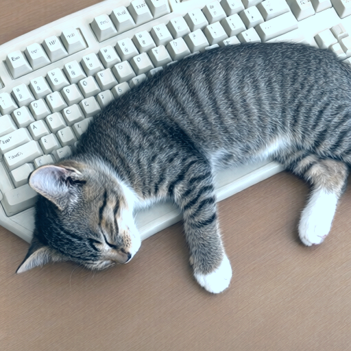
Visual proxy0.704
Layout0.687
dHash0.531
Palette distance0.047
Visual proxy change: 0.667 → 0.704 (+0.038)
Measured outcome: The current render regraded toward the artifact's recorded tone as a post-process; it reads the artifact, never the source. Source luminance 148, saturation 48; current luminance 111, saturation 88; regraded luminance 148, saturation 47 (0–255).
266.3:1 plain artifact ratio · 612,448 → 2,300 bytes · written by llmpeg/0.5.1 · 481.1:1 gzip stored ratio · 1,273 bytes on disk
Prompt and machine-readable result
Create a new image from this semantic description. Primary request: Close-up, high-angle view looking down at a small brown and grey striped tabby kitten fast asleep. The cat is lying directly across the keys of a beige or light-grey plastic computer keyboard that sits on a wooden desk surface. Its head rests near the bottom-left corner of the frame with its eyes closed in deep sleep. One front paw (white tip) dangles over the key area while another lies flat against the wood to the right. Fidelity goal: Maximize resemblance to this specifically described subject. Prioritize distinctive markings, proportions, pose landmarks, crop, and object geometry over generic beauty or creative interpretation. Style/medium: close-up, high-angle shot, natural indoor lighting from above casting soft shadows under the cat's body and head. Canvas: 2048x1536 (1.333:1) Composition: - 45% - 85%, 30% - 70%: The main subject: a sleeping kitten with brown and grey tabby stripes, white chest fur, and white paws. Its head is turned slightly to the left side of frame. - 15% - 92%, 60% - 85%: The keyboard: An off-white or beige computer keyboard with standard QWERTY layout. The keys are visible under and around the cat's body. - 1% - 43%, 2% - 97%: Background surface: A light brown wooden desk or table top showing wood grain texture beneath both the keyboard and the kitten. Palette: #8B6F5C, #D3CFCA, #A97E42 Tone: mid-tone exposure (mean luminance 148/255), moderate contrast (spread 55/255), natural, moderate colour with a neutral white balance (mean saturation 48/255). Match this grading exactly: do not brighten, add contrast, boost saturation, or apply HDR, glow, or cinematic colour grading. Text to render verbatim when possible: - "\"Esc\"" - "\"Tab\"" - "\"Q\" \"W\" \"E\"" - "\"A\" \"S\" \"D\"" - "\"Z\" (partially obscured)" - "\"X\"" - "\"C\"" - "\"V\"" - "\"B\" (obscured by paw)\",\n \"N\", \"M\", \"K\", \"L\", \";\" , '\"', 'O' ', /P', '[', '\\]', '`'" - "F9, F10, F11, F12 keys visible on the right side of keyboard" Constraints: preserve every described landmark, hierarchy, and spatial relationship; add no unlisted subject, object, marking, or decoration. This is a semantic reconstruction, not the original. Avoid: inferring breed beyond tabby pattern description, speculating on time of day or location context outside visual evidence; extra logos; watermarks; invented claims.
Your assessment
Source: Remedios44 · Public domain dedication · reconstruction generated from text only
CASE tone-cat-on-grass-loop
PASS
Cat stretched on grass · closed loop


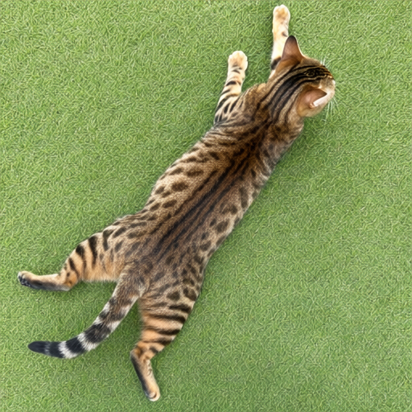
Visual proxy0.638
Layout0.662
dHash0.500
Palette distance0.048
Visual proxy change: 0.570 → 0.638 (+0.068)
Measured outcome: A second render at the same seed with negatives chosen from the first render's measured error: dark, underexposed, dim, harsh contrast, deep black shadows, vivid colors, saturated colors. Source luminance 158, saturation 89; current luminance 124, saturation 126; closed loop luminance 139, saturation 107 (0–255). The three cats also informed the earlier hand-picked negatives; the loop's terms are a fixed rule.
278.3:1 plain artifact ratio · 799,983 → 2,875 bytes · written by llmpeg/0.5.1 · 522.5:1 gzip stored ratio · 1,531 bytes on disk
Prompt and machine-readable result
Create a new image from this semantic description. Primary request: Top-down view of one brown and black striped domestic shorthair cat lying supine on short, bright green grass. The cat is fully stretched out with limbs splayed: front paws raised high near the head, hind legs extended straight back, tail fanned slightly to the left side. Fur pattern consists of dark chocolate-brown M-shaped markings along the spine and lighter tan underbelly; whiskers are visible extending from muzzle. Fidelity goal: Maximize resemblance to this specifically described subject. Prioritize distinctive markings, proportions, pose landmarks, crop, and object geometry over generic beauty or creative interpretation. Style/medium: medium, top-down camera viewpoint at approximately eye level with subject; natural daylight illumination from above creating soft shadows beneath limbs and body; shallow depth of field blurring grass texture slightly around edges while keeping cat sharply focused. Canvas: 1536x1024 (1.500:1) Composition: - 0% - 100%, 25% - 78%: Full body of cat oriented diagonally across frame, head near top-right corner facing away from camera toward upper right; spine runs center-left to bottom-center. - 63%-100%, 25%-45%: Cat’s head and neck region showing pointed ears, white muzzle area with visible whiskers extending forward-rightward directionally away from viewer perspective. - 87%-94%, 31%-60%: Front right paw extended upward toward top edge of frame; front left paw slightly lower and more inward positioned relative to body axis. - 25%-45%, 31%-78%: Cat’s torso displaying longitudinal dark brown stripes over lighter tan fur texture running parallel to spine line from neck down toward hindquarters. - 0% - 63%, 31%-94%: Hind legs and tail region with extended back paws splayed outward; striped pattern continues along lower body into tail which fans slightly leftward near bottom-left quadrant. - 0% - 100%, 78%-94%: Background consisting of uniformly cut green grass with minor variations in shade due to lighting; no other objects or subjects present within frame boundaries. Palette: #5C9E62, #A07B3F, #4D381E Tone: bright exposure (mean luminance 158/255), low, soft contrast (spread 24/255), natural, moderate colour with a warm white balance (mean saturation 89/255). Match this grading exactly: do not brighten, add contrast, boost saturation, or apply HDR, glow, or cinematic colour grading. Text to render verbatim when possible: - none Constraints: preserve every described landmark, hierarchy, and spatial relationship; add no unlisted subject, object, marking, or decoration. This is a semantic reconstruction, not the original. Avoid: inferring breed beyond visible tabby markings, speculating on emotional state or intent behind pose, adding environmental context not clearly depicted (e.g., garden, park); extra logos; watermarks; invented claims.
Your assessment
Source: Clavecin · Public domain dedication · reconstruction generated from text only
{kind=link}
{kind=link}
CASE tone-cat-on-grass-matched
FAIL
Cat stretched on grass · regraded
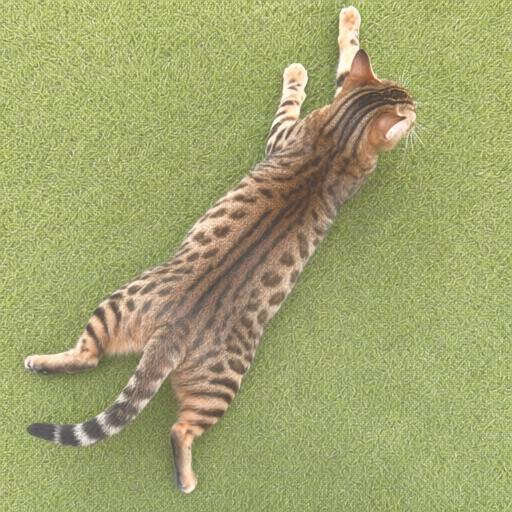
Visual proxy0.689
Layout0.646
dHash0.484
Palette distance0.028
Visual proxy change: 0.570 → 0.689 (+0.120)
Measured outcome: The current render regraded toward the artifact's recorded tone as a post-process; it reads the artifact, never the source. Source luminance 158, saturation 89; current luminance 124, saturation 126; regraded luminance 158, saturation 88 (0–255).
278.3:1 plain artifact ratio · 799,983 → 2,875 bytes · written by llmpeg/0.5.1 · 522.5:1 gzip stored ratio · 1,531 bytes on disk
Prompt and machine-readable result
Create a new image from this semantic description. Primary request: Top-down view of one brown and black striped domestic shorthair cat lying supine on short, bright green grass. The cat is fully stretched out with limbs splayed: front paws raised high near the head, hind legs extended straight back, tail fanned slightly to the left side. Fur pattern consists of dark chocolate-brown M-shaped markings along the spine and lighter tan underbelly; whiskers are visible extending from muzzle. Fidelity goal: Maximize resemblance to this specifically described subject. Prioritize distinctive markings, proportions, pose landmarks, crop, and object geometry over generic beauty or creative interpretation. Style/medium: medium, top-down camera viewpoint at approximately eye level with subject; natural daylight illumination from above creating soft shadows beneath limbs and body; shallow depth of field blurring grass texture slightly around edges while keeping cat sharply focused. Canvas: 1536x1024 (1.500:1) Composition: - 0% - 100%, 25% - 78%: Full body of cat oriented diagonally across frame, head near top-right corner facing away from camera toward upper right; spine runs center-left to bottom-center. - 63%-100%, 25%-45%: Cat’s head and neck region showing pointed ears, white muzzle area with visible whiskers extending forward-rightward directionally away from viewer perspective. - 87%-94%, 31%-60%: Front right paw extended upward toward top edge of frame; front left paw slightly lower and more inward positioned relative to body axis. - 25%-45%, 31%-78%: Cat’s torso displaying longitudinal dark brown stripes over lighter tan fur texture running parallel to spine line from neck down toward hindquarters. - 0% - 63%, 31%-94%: Hind legs and tail region with extended back paws splayed outward; striped pattern continues along lower body into tail which fans slightly leftward near bottom-left quadrant. - 0% - 100%, 78%-94%: Background consisting of uniformly cut green grass with minor variations in shade due to lighting; no other objects or subjects present within frame boundaries. Palette: #5C9E62, #A07B3F, #4D381E Tone: bright exposure (mean luminance 158/255), low, soft contrast (spread 24/255), natural, moderate colour with a warm white balance (mean saturation 89/255). Match this grading exactly: do not brighten, add contrast, boost saturation, or apply HDR, glow, or cinematic colour grading. Text to render verbatim when possible: - none Constraints: preserve every described landmark, hierarchy, and spatial relationship; add no unlisted subject, object, marking, or decoration. This is a semantic reconstruction, not the original. Avoid: inferring breed beyond visible tabby markings, speculating on emotional state or intent behind pose, adding environmental context not clearly depicted (e.g., garden, park); extra logos; watermarks; invented claims.
Your assessment
Source: Clavecin · Public domain dedication · reconstruction generated from text only
CASE tone-amsterdam-market-loop
INCOMPLETE
Amsterdam market · closed loop


Visual proxy0.696
Layout0.668
dHash0.484
Palette distance0.054
Visual proxy change: 0.689 → 0.696 (+0.007)
Measured outcome: A second render at the same seed with negatives chosen from the first render's measured error: dark, underexposed, dim, vivid colors, saturated colors. Source luminance 89, saturation 60; current luminance 62, saturation 141; closed loop luminance 74, saturation 124 (0–255).
278.8:1 plain artifact ratio · 742,058 → 2,662 bytes · written by llmpeg/0.6.0 · 533.5:1 gzip stored ratio · 1,391 bytes on disk
Prompt and machine-readable result
Create a new image from this semantic description. Primary request: An eye-level, medium shot of an active outdoor market on a sunny day in front of colorful brick buildings. In the foreground right, a fruit vendor stands behind stacked green plastic crates holding piles of oranges; to his left are yellow crates with limes and lemons. A woman with curly brown hair wearing a dark coat with fur trim faces away from camera near orange crate pile. Mid-ground shows three pedestrians walking toward viewer: woman in olive puffer jacket carrying tan shoulder bag, man in green jacket over plaid shirt holding paper bag, woman in black coat with grey crossbody strap and gloves. Background features rows of market stalls under red/orange/brown awnings; people browsing produce or standing near vendor counters. Distant buildings show varied colors including blue/green/red brick facades with white window frames. Fidelity goal: Maximize resemblance to this specifically described subject. Prioritize distinctive markings, proportions, pose landmarks, crop, and object geometry over generic beauty or creative interpretation. Style/medium: eye-level medium shot, natural daylight with hard shadows cast by awnings and people, shallow depth of field blurring distant background slightly Canvas: 1920x1440 (1.333:1) Composition: - 0% A-35%, y 20%-60%: Foreground pedestrians: woman in olive puffer jacket (left), man in green plaid shirt holding paper bag, woman in black coat with grey strap walking toward camera. - 48% A-100%, y 52%-96%: Foreground fruit stall: vendor behind stacked crates (green/yellow), piles of oranges and citrus fruits, woman in fur-trimmed coat facing away. - 38% A-100%, y 42%-75%: Mid-ground market activity: people browsing stalls under awnings, vendor counters with produce displays visible behind pedestrians. Palette: #FF9933, #8B4513, #2F4F4F, #DAA520 Tone: moderately dark exposure (mean luminance 89/255), moderate contrast (spread 53/255), natural, moderate colour with a neutral white balance (mean saturation 60/255). Match this grading exactly: do not brighten, add contrast, boost saturation, or apply HDR, glow, or cinematic colour grading. Text to render verbatim when possible: - "GOWTU CENTRE" - "JEWELIER" - "Gouda Zilverenid" - "Abt Gouwstraat Nr: 47138 Amsterdam" - "06-5297146" - "ZOOO" - "Sola" Constraints: preserve every described landmark, hierarchy, and spatial relationship; add no unlisted subject, object, marking, or decoration. This is a semantic reconstruction, not the original. Avoid: specific identity misidentification, inferred clothing brands or models not visible in image, incorrect crate color assignments; extra logos; watermarks; invented claims.
Your assessment
Source: Fons Heijnsbroek · CC0 1.0 Universal (public domain dedication) · reconstruction generated from text only
CASE tone-amsterdam-market-matched
INCOMPLETE
Amsterdam market · regraded
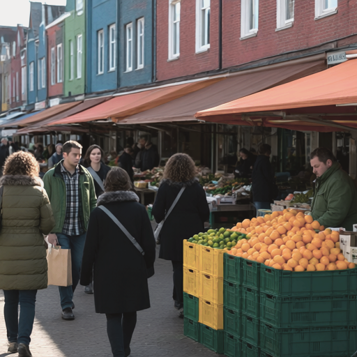
Visual proxy0.716
Layout0.692
dHash0.531
Palette distance0.029
Visual proxy change: 0.689 → 0.716 (+0.027)
Measured outcome: The current render regraded toward the artifact's recorded tone as a post-process; it reads the artifact, never the source. Source luminance 89, saturation 60; current luminance 62, saturation 141; regraded luminance 89, saturation 60 (0–255).
278.8:1 plain artifact ratio · 742,058 → 2,662 bytes · written by llmpeg/0.6.0 · 533.5:1 gzip stored ratio · 1,391 bytes on disk
Prompt and machine-readable result
Create a new image from this semantic description. Primary request: An eye-level, medium shot of an active outdoor market on a sunny day in front of colorful brick buildings. In the foreground right, a fruit vendor stands behind stacked green plastic crates holding piles of oranges; to his left are yellow crates with limes and lemons. A woman with curly brown hair wearing a dark coat with fur trim faces away from camera near orange crate pile. Mid-ground shows three pedestrians walking toward viewer: woman in olive puffer jacket carrying tan shoulder bag, man in green jacket over plaid shirt holding paper bag, woman in black coat with grey crossbody strap and gloves. Background features rows of market stalls under red/orange/brown awnings; people browsing produce or standing near vendor counters. Distant buildings show varied colors including blue/green/red brick facades with white window frames. Fidelity goal: Maximize resemblance to this specifically described subject. Prioritize distinctive markings, proportions, pose landmarks, crop, and object geometry over generic beauty or creative interpretation. Style/medium: eye-level medium shot, natural daylight with hard shadows cast by awnings and people, shallow depth of field blurring distant background slightly Canvas: 1920x1440 (1.333:1) Composition: - 0% A-35%, y 20%-60%: Foreground pedestrians: woman in olive puffer jacket (left), man in green plaid shirt holding paper bag, woman in black coat with grey strap walking toward camera. - 48% A-100%, y 52%-96%: Foreground fruit stall: vendor behind stacked crates (green/yellow), piles of oranges and citrus fruits, woman in fur-trimmed coat facing away. - 38% A-100%, y 42%-75%: Mid-ground market activity: people browsing stalls under awnings, vendor counters with produce displays visible behind pedestrians. Palette: #FF9933, #8B4513, #2F4F4F, #DAA520 Tone: moderately dark exposure (mean luminance 89/255), moderate contrast (spread 53/255), natural, moderate colour with a neutral white balance (mean saturation 60/255). Match this grading exactly: do not brighten, add contrast, boost saturation, or apply HDR, glow, or cinematic colour grading. Text to render verbatim when possible: - "GOWTU CENTRE" - "JEWELIER" - "Gouda Zilverenid" - "Abt Gouwstraat Nr: 47138 Amsterdam" - "06-5297146" - "ZOOO" - "Sola" Constraints: preserve every described landmark, hierarchy, and spatial relationship; add no unlisted subject, object, marking, or decoration. This is a semantic reconstruction, not the original. Avoid: specific identity misidentification, inferred clothing brands or models not visible in image, incorrect crate color assignments; extra logos; watermarks; invented claims.
Your assessment
Source: Fons Heijnsbroek · CC0 1.0 Universal (public domain dedication) · reconstruction generated from text only
CASE tone-astronaut-crew-loop
INCOMPLETE
Astronaut crew · closed loop


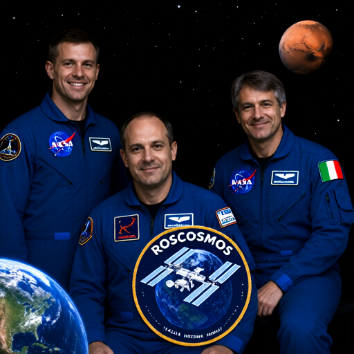
Visual proxy0.649
Layout0.709
dHash0.562
Palette distance0.073
Visual proxy change: 0.646 → 0.649 (+0.002)
Measured outcome: A second render at the same seed with negatives chosen from the first render's measured error: dark, underexposed, dim, dull colors, desaturated, grey, washed out, warm color cast, orange tint, yellow tint. Source luminance 59, saturation 169; current luminance 28, saturation 138; closed loop luminance 34, saturation 142 (0–255).
326.9:1 plain artifact ratio · 640,005 → 1,958 bytes · written by llmpeg/0.6.0 · 562.9:1 gzip stored ratio · 1,137 bytes on disk
Prompt and machine-readable result
Create a new image from this semantic description. Primary request: Six smiling men standing and sitting for a formal group photo, all wearing matching royal blue zip-up flight jackets. The setting is deep space with stars, the planet Earth in the bottom left corner showing North America, and the planet Mars in the top right corner. A large mission patch featuring an ISS orbiting Earth dominates the lower center foreground. Fidelity goal: Maximize resemblance to this specifically described subject. Prioritize distinctive markings, proportions, pose landmarks, crop, and object geometry over generic beauty or creative interpretation. Style/medium: studio lighting, medium focal length portrait shot with shallow depth of field focusing on faces and upper torsos. Canvas: 1920x1536 (1.250:1) Composition: - 0-32%, 15%-68%: Standing man on the far left with short brown hair, smiling at camera. Wearing blue flight suit with NASA patch and mission patches. - 47-92%, 10-38%: Seated astronaut in front center-left with receding hairline, looking directly forward. Blue jacket has Roscosmos logo on left chest. - 56-92%, 47%-82%: Standing man seated position far right with greyish-brown hair and Italian flag patch visible on sleeve. Palette: #0F3D91, #FFFFFF, #FF6B35 Tone: dark, low-key exposure (mean luminance 59/255), moderate contrast (spread 50/255), vivid colour with a cool white balance (mean saturation 169/255). Match this grading exactly: do not brighten, add contrast, boost saturation, or apply HDR, glow, or cinematic colour grading. Text to render verbatim when possible: - "NASA" - "ROSCOSMOS" - "ESA" - "ITALIA" - "ACABA BRESNIK" - "RYAZANSKII NESPOLI" - "VANDE HEY MISURUKIN" Constraints: preserve every described landmark, hierarchy, and spatial relationship; add no unlisted subject, object, marking, or decoration. This is a semantic reconstruction, not the original. Avoid: specific identity names or nationalities not explicitly written; extra logos; watermarks; invented claims.
Your assessment
Source: Robert Markowitz · Public domain (NASA) · reconstruction generated from text only
{kind=link}
CASE tone-astronaut-crew-matched
INCOMPLETE
Astronaut crew · regraded
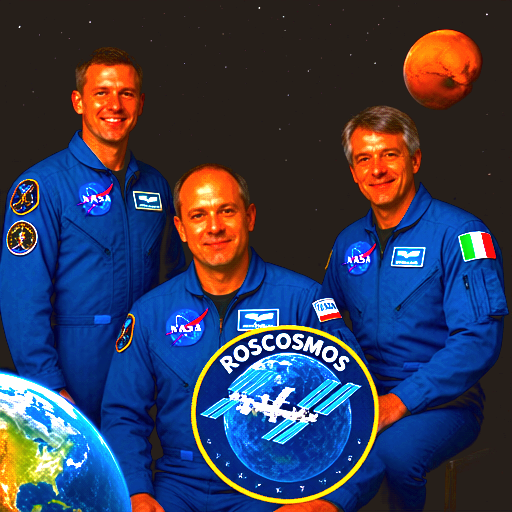
Visual proxy0.682
Layout0.726
dHash0.562
Palette distance0.061
Visual proxy change: 0.646 → 0.682 (+0.036)
Measured outcome: The current render regraded toward the artifact's recorded tone as a post-process; it reads the artifact, never the source. Source luminance 59, saturation 169; current luminance 28, saturation 138; regraded luminance 61, saturation 170 (0–255).
326.9:1 plain artifact ratio · 640,005 → 1,958 bytes · written by llmpeg/0.6.0 · 562.9:1 gzip stored ratio · 1,137 bytes on disk
Prompt and machine-readable result
Create a new image from this semantic description. Primary request: Six smiling men standing and sitting for a formal group photo, all wearing matching royal blue zip-up flight jackets. The setting is deep space with stars, the planet Earth in the bottom left corner showing North America, and the planet Mars in the top right corner. A large mission patch featuring an ISS orbiting Earth dominates the lower center foreground. Fidelity goal: Maximize resemblance to this specifically described subject. Prioritize distinctive markings, proportions, pose landmarks, crop, and object geometry over generic beauty or creative interpretation. Style/medium: studio lighting, medium focal length portrait shot with shallow depth of field focusing on faces and upper torsos. Canvas: 1920x1536 (1.250:1) Composition: - 0-32%, 15%-68%: Standing man on the far left with short brown hair, smiling at camera. Wearing blue flight suit with NASA patch and mission patches. - 47-92%, 10-38%: Seated astronaut in front center-left with receding hairline, looking directly forward. Blue jacket has Roscosmos logo on left chest. - 56-92%, 47%-82%: Standing man seated position far right with greyish-brown hair and Italian flag patch visible on sleeve. Palette: #0F3D91, #FFFFFF, #FF6B35 Tone: dark, low-key exposure (mean luminance 59/255), moderate contrast (spread 50/255), vivid colour with a cool white balance (mean saturation 169/255). Match this grading exactly: do not brighten, add contrast, boost saturation, or apply HDR, glow, or cinematic colour grading. Text to render verbatim when possible: - "NASA" - "ROSCOSMOS" - "ESA" - "ITALIA" - "ACABA BRESNIK" - "RYAZANSKII NESPOLI" - "VANDE HEY MISURUKIN" Constraints: preserve every described landmark, hierarchy, and spatial relationship; add no unlisted subject, object, marking, or decoration. This is a semantic reconstruction, not the original. Avoid: specific identity names or nationalities not explicitly written; extra logos; watermarks; invented claims.
Your assessment
Source: Robert Markowitz · Public domain (NASA) · reconstruction generated from text only
CASE tone-dogs-beach-loop
FAIL
Dogs on a beach · closed loop


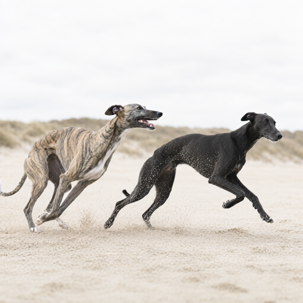
Visual proxy0.580
Layout0.630
dHash0.484
Palette distance0.063
Visual proxy change: 0.583 → 0.580 (-0.003)
Measured outcome: A second render at the same seed with negatives chosen from the first render's measured error: overexposed, too bright, harsh contrast, deep black shadows, dull colors, desaturated, grey, washed out. Source luminance 190, saturation 39; current luminance 212, saturation 13; closed loop luminance 212, saturation 15 (0–255).
200.3:1 plain artifact ratio · 533,079 → 2,661 bytes · written by llmpeg/0.6.0 · 367.9:1 gzip stored ratio · 1,449 bytes on disk
Prompt and machine-readable result
Create a new image from this semantic description. Primary request: A medium shot at eye level of two slender sighthound-like canines running left to right across a sandy beach. The dog in the foreground (left) is brindle-patterned: light tan base with irregular black stripes covering neck and back; short rounded ears set high on skull, dark eyes looking forward; muzzle extended slightly upward as mouth opens showing teeth and pink tongue; hind legs driving ground while front paws lift off surface; tail held low. The second dog (right) is solid charcoal-black coat speckled with white sand particles clinging to fur along flank and rump; head turned toward first dog, eyes focused forward; ears folded back against skull; long thin body stretched horizontally as it runs parallel to companion; legs in mid-stride kicking up fine granules of pale beige sand that scatter through air around them. Background is out-of-focus coastal dunes under overcast sky with diffuse even lighting casting no strong shadows. Fidelity goal: Maximize resemblance to this specifically described subject. Prioritize distinctive markings, proportions, pose landmarks, crop, and object geometry over generic beauty or creative interpretation. Style/medium: medium, eye-level camera angle, moderate focal length (~70mm), soft diffused lighting from overcast sky with no directional shadows Canvas: 1920x1159 (1.657:1) Composition: - 0-48%, 215-673%: Brindle-coated dog in motion, head turned slightly right showing open mouth with visible teeth and tongue; body angled forward as it runs leftward across frame. - 349-860%, 215-700%: Solid black dog running parallel to first, head turned toward companion; sand particles cling visibly along flank and rump as legs propel forward on beach surface. - 0-99%, 683-1000%: Sandy ground texture with disturbed patches where dogs’ paws have kicked up loose grains; shallow depth of field blurs distant dunes and sky behind subjects. Palette: #D4C6A8, #5B3E2F, #1A1A1A Tone: very bright, high-key exposure (mean luminance 190/255), moderate contrast (spread 41/255), muted, desaturated colour with a neutral white balance (mean saturation 39/255). Match this grading exactly: do not brighten, add contrast, boost saturation, or apply HDR, glow, or cinematic colour grading. Text to render verbatim when possible: - none Constraints: preserve every described landmark, hierarchy, and spatial relationship; add no unlisted subject, object, marking, or decoration. This is a semantic reconstruction, not the original. Avoid: inferring breed beyond sighthound-like morphology, speculating on emotional state or intent, adding non-visible elements like clothing or accessories; extra logos; watermarks; invented claims.
Your assessment
Source: Mark Galer · CC0 1.0 Universal (public domain dedication) · reconstruction generated from text only
.jpg){kind=link}
CASE tone-dogs-beach-matched
FAIL
Dogs on a beach · regraded
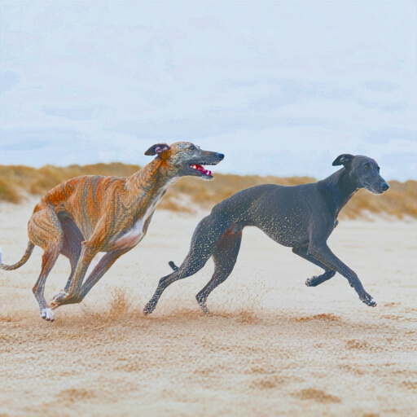
Visual proxy0.629
Layout0.631
dHash0.484
Palette distance0.017
Visual proxy change: 0.583 → 0.629 (+0.045)
Measured outcome: The current render regraded toward the artifact's recorded tone as a post-process; it reads the artifact, never the source. Source luminance 190, saturation 39; current luminance 212, saturation 13; regraded luminance 190, saturation 38 (0–255).
200.3:1 plain artifact ratio · 533,079 → 2,661 bytes · written by llmpeg/0.6.0 · 367.9:1 gzip stored ratio · 1,449 bytes on disk
Prompt and machine-readable result
Create a new image from this semantic description. Primary request: A medium shot at eye level of two slender sighthound-like canines running left to right across a sandy beach. The dog in the foreground (left) is brindle-patterned: light tan base with irregular black stripes covering neck and back; short rounded ears set high on skull, dark eyes looking forward; muzzle extended slightly upward as mouth opens showing teeth and pink tongue; hind legs driving ground while front paws lift off surface; tail held low. The second dog (right) is solid charcoal-black coat speckled with white sand particles clinging to fur along flank and rump; head turned toward first dog, eyes focused forward; ears folded back against skull; long thin body stretched horizontally as it runs parallel to companion; legs in mid-stride kicking up fine granules of pale beige sand that scatter through air around them. Background is out-of-focus coastal dunes under overcast sky with diffuse even lighting casting no strong shadows. Fidelity goal: Maximize resemblance to this specifically described subject. Prioritize distinctive markings, proportions, pose landmarks, crop, and object geometry over generic beauty or creative interpretation. Style/medium: medium, eye-level camera angle, moderate focal length (~70mm), soft diffused lighting from overcast sky with no directional shadows Canvas: 1920x1159 (1.657:1) Composition: - 0-48%, 215-673%: Brindle-coated dog in motion, head turned slightly right showing open mouth with visible teeth and tongue; body angled forward as it runs leftward across frame. - 349-860%, 215-700%: Solid black dog running parallel to first, head turned toward companion; sand particles cling visibly along flank and rump as legs propel forward on beach surface. - 0-99%, 683-1000%: Sandy ground texture with disturbed patches where dogs’ paws have kicked up loose grains; shallow depth of field blurs distant dunes and sky behind subjects. Palette: #D4C6A8, #5B3E2F, #1A1A1A Tone: very bright, high-key exposure (mean luminance 190/255), moderate contrast (spread 41/255), muted, desaturated colour with a neutral white balance (mean saturation 39/255). Match this grading exactly: do not brighten, add contrast, boost saturation, or apply HDR, glow, or cinematic colour grading. Text to render verbatim when possible: - none Constraints: preserve every described landmark, hierarchy, and spatial relationship; add no unlisted subject, object, marking, or decoration. This is a semantic reconstruction, not the original. Avoid: inferring breed beyond sighthound-like morphology, speculating on emotional state or intent, adding non-visible elements like clothing or accessories; extra logos; watermarks; invented claims.
Your assessment
Source: Mark Galer · CC0 1.0 Universal (public domain dedication) · reconstruction generated from text only
CASE tone-food-table-loop
PASS
Food on a table · closed loop


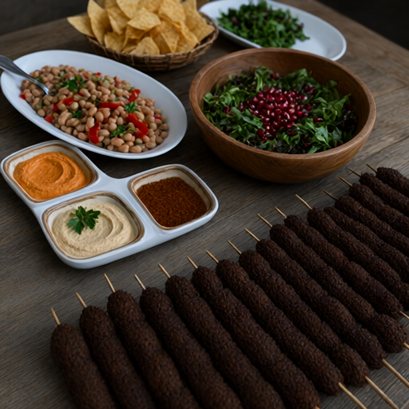
Visual proxy0.630
Layout0.690
dHash0.547
Palette distance0.123
Visual proxy change: 0.605 → 0.630 (+0.025)
Measured outcome: A second render at the same seed with negatives chosen from the first render's measured error: dark, underexposed, dim, flat, hazy, low contrast, vivid colors, saturated colors, warm color cast, orange tint, yellow tint. Source luminance 93, saturation 70; current luminance 51, saturation 157; closed loop luminance 56, saturation 126 (0–255).
163.1:1 plain artifact ratio · 379,957 → 2,329 bytes · written by llmpeg/0.6.0 · 304.9:1 gzip stored ratio · 1,246 bytes on disk
Prompt and machine-readable result
Create a new image from this semantic description. Primary request: An overhead view of a rustic wooden table laden with various dishes: two white oval platters containing bean salad garnished with red peppers; three small divided ceramic plates holding creamy dips in beige and orange hues topped with parsley; one large wooden bowl filled with green leafy vegetables mixed with pomegranate seeds; numerous dark brown falafel skewers arranged diagonally across the foreground. In the background, a basket of golden tortilla chips sits beside another white platter with chopped greens. Fidelity goal: Maximize resemblance to this specifically described subject. Prioritize distinctive markings, proportions, pose landmarks, crop, and object geometry over generic beauty or creative interpretation. Style/medium: medium, camera viewpoint is high angle looking down at the table; lens and depth of field show shallow focus with foreground sharpness fading into background blur; light direction appears natural from upper left casting soft shadows on wooden surface. Canvas: 1280x1920 (0.667:1) Composition: - 0-100%, 65-98%: Foreground dominated by rows of dark brown falafel skewers pointing toward the bottom right corner. - 23-47%, 47-72%: Central white oval platter filled with beige beans mixed with red peppers and green herbs, a spoon rests inside it. - 19-54%, 40-68%: Three small divided ceramic plates arranged in an arc: top left holds orange dip; bottom left contains beige hummus with parsley garnish; right section displays reddish-brown spice. - 23-59%, 168-407%: Large wooden bowl containing mixed greens and pomegranate seeds positioned to the center-right of frame. Palette: #F5E6C3, #A67B5B, #2D1809 Tone: moderately dark exposure (mean luminance 93/255), moderate contrast (spread 57/255), natural, moderate colour with a neutral white balance (mean saturation 70/255). Match this grading exactly: do not brighten, add contrast, boost saturation, or apply HDR, glow, or cinematic colour grading. Text to render verbatim when possible: - none Constraints: preserve every described landmark, hierarchy, and spatial relationship; add no unlisted subject, object, marking, or decoration. This is a semantic reconstruction, not the original. Avoid: specific identity, geometry errors, content misinterpretation; extra logos; watermarks; invented claims.
Your assessment
Source: www.Pixel.la Free Stock Photos · CC0 1.0 Universal (public domain dedication) · reconstruction generated from text only
{kind=link}
CASE tone-food-table-matched
PASS
Food on a table · regraded
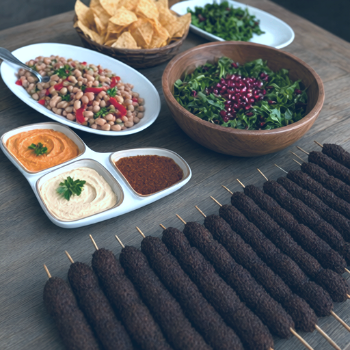
Visual proxy0.709
Layout0.697
dHash0.547
Palette distance0.021
Visual proxy change: 0.605 → 0.709 (+0.104)
Measured outcome: The current render regraded toward the artifact's recorded tone as a post-process; it reads the artifact, never the source. Source luminance 93, saturation 70; current luminance 51, saturation 157; regraded luminance 93, saturation 70 (0–255).
163.1:1 plain artifact ratio · 379,957 → 2,329 bytes · written by llmpeg/0.6.0 · 304.9:1 gzip stored ratio · 1,246 bytes on disk
Prompt and machine-readable result
Create a new image from this semantic description. Primary request: An overhead view of a rustic wooden table laden with various dishes: two white oval platters containing bean salad garnished with red peppers; three small divided ceramic plates holding creamy dips in beige and orange hues topped with parsley; one large wooden bowl filled with green leafy vegetables mixed with pomegranate seeds; numerous dark brown falafel skewers arranged diagonally across the foreground. In the background, a basket of golden tortilla chips sits beside another white platter with chopped greens. Fidelity goal: Maximize resemblance to this specifically described subject. Prioritize distinctive markings, proportions, pose landmarks, crop, and object geometry over generic beauty or creative interpretation. Style/medium: medium, camera viewpoint is high angle looking down at the table; lens and depth of field show shallow focus with foreground sharpness fading into background blur; light direction appears natural from upper left casting soft shadows on wooden surface. Canvas: 1280x1920 (0.667:1) Composition: - 0-100%, 65-98%: Foreground dominated by rows of dark brown falafel skewers pointing toward the bottom right corner. - 23-47%, 47-72%: Central white oval platter filled with beige beans mixed with red peppers and green herbs, a spoon rests inside it. - 19-54%, 40-68%: Three small divided ceramic plates arranged in an arc: top left holds orange dip; bottom left contains beige hummus with parsley garnish; right section displays reddish-brown spice. - 23-59%, 168-407%: Large wooden bowl containing mixed greens and pomegranate seeds positioned to the center-right of frame. Palette: #F5E6C3, #A67B5B, #2D1809 Tone: moderately dark exposure (mean luminance 93/255), moderate contrast (spread 57/255), natural, moderate colour with a neutral white balance (mean saturation 70/255). Match this grading exactly: do not brighten, add contrast, boost saturation, or apply HDR, glow, or cinematic colour grading. Text to render verbatim when possible: - none Constraints: preserve every described landmark, hierarchy, and spatial relationship; add no unlisted subject, object, marking, or decoration. This is a semantic reconstruction, not the original. Avoid: specific identity, geometry errors, content misinterpretation; extra logos; watermarks; invented claims.
Your assessment
Source: www.Pixel.la Free Stock Photos · CC0 1.0 Universal (public domain dedication) · reconstruction generated from text only